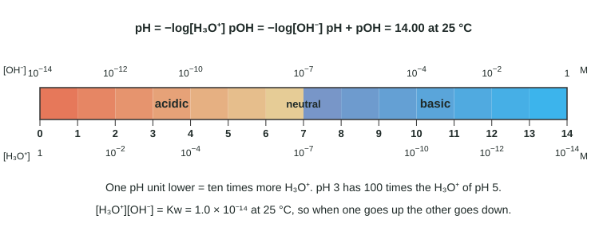

Everything in Unit 8 rests on one small fact: water is not just H₂O molecules. A tiny fraction of them have swapped a proton, so every glass of water, every soft drink and every bottle of drain cleaner contains both hydronium ions, H₃O⁺, and hydroxide ions, OH⁻. This page shows where those ions come from, how their amounts are linked, and how the pH scale reports them.
Water ionizes itself
Water molecules are constantly colliding. Once in a while, one molecule pulls a proton off a neighbor:
H₂O(l) + H₂O(l) ⇌ H₃O⁺(aq) + OH⁻(aq)
One molecule acts as a Brønsted-Lowry acid (it donates H⁺) and the other as a base (it accepts it). The reverse reaction is fast too: an H₃O⁺ and an OH⁻ that meet give two water molecules back. So this is a dynamic equilibrium, called the autoionization (self-ionization) of water. It lies far to the left. In pure water at 25 °C, [H₃O⁺] = 1.0 × 10⁻⁷ M. Water itself is about 55.5 M, so only about 2 molecules in every billion are ionized at any moment.
Kw: the ion product of water
Write the equilibrium constant for autoionization. Water is the pure liquid solvent, so it is left out, just as pure solids and liquids are left out of any K expression:
Kw = [H₃O⁺][OH⁻] = 1.0 × 10⁻¹⁴ at 25 °C
This holds in every water solution, not only in pure water. Dissolve an acid and [H₃O⁺] rises; then Q = [H₃O⁺][OH⁻] is larger than Kw, so the reverse reaction runs (H₃O⁺ + OH⁻ → 2 H₂O) until the product is back to Kw. The result: more H₃O⁺ always means less OH⁻, and the reverse. Know one, and you can calculate the other.
Worked example 1: one ion from the other. A cleaning solution at 25 °C has [OH⁻] = 6.3 × 10⁻⁵ M. What is [H₃O⁺]?
Step 1. Rearrange Kw: [H₃O⁺] = Kw / [OH⁻].
Step 2. [H₃O⁺] = (1.0 × 10⁻¹⁴) / (6.3 × 10⁻⁵ M) = 1.587 × 10⁻¹⁰ M.
Step 3. Round once, to the two significant figures of the data: 1.6 × 10⁻¹⁰ M. Check: [OH⁻] is larger than 1.0 × 10⁻⁷ M, so the solution is basic and [H₃O⁺] must be smaller than 1.0 × 10⁻⁷ M. It is.
The pH scale
Hydronium concentrations in real solutions run from about 1 M down to 10⁻¹⁴ M, fourteen powers of ten. Writing them all in scientific notation is clumsy, so chemists use a logarithm scale:
pH = −log[H₃O⁺] pOH = −log[OH⁻]

Two features of the pH scale trip people up. First, the minus sign: a lower pH means more H₃O⁺. Second, the log: a change of one pH unit is a factor of 10 in [H₃O⁺], two units is a factor of 100, three is 1,000. pH 3 is not "a bit more acidic" than pH 5; it has 100 times the hydronium.
Take −log of both sides of Kw = [H₃O⁺][OH⁻] = 1.0 × 10⁻¹⁴ and you get a handy shortcut:
pH + pOH = 14.00 at 25 °C
The equations sheet gives pH, pOH, Kw and this sum. The log is the base-10 log (the LOG key), never ln.
Worked example 2: pH from a concentration, with the right decimal places. A sample of rainwater has [H₃O⁺] = 2.5 × 10⁻⁵ M. Find its pH and pOH.
Step 1. pH = −log(2.5 × 10⁻⁵) = 4.6021.
Step 2, significant figures. In a logarithm, the digits before the decimal point come from the power of ten; only the digits after it carry the measurement. The concentration has two significant figures, so the pH gets two decimal places: pH = 4.60.
Step 3. pOH = 14.00 − 4.60 = 9.40.
Worked example 3: going back from pH to concentration. Stomach fluid has pH 1.85. Find [H₃O⁺] and [OH⁻].
Step 1. Undo the log with the antilog: [H₃O⁺] = 10^−pH = 10^−1.85 = 1.413 × 10⁻² M.
Step 2. Two decimal places in the pH means two significant figures: [H₃O⁺] = 1.4 × 10⁻² M.
Step 3. [OH⁻] = 10^−pOH = 10^−(14.00 − 1.85) = 10^−12.15 = 7.1 × 10⁻¹³ M. (Kw / [H₃O⁺] gives the same answer.)
Acidic, basic and neutral
| Solution | Definition | pH at 25 °C |
|---|---|---|
| Acidic | [H₃O⁺] > [OH⁻] | below 7.00 |
| Neutral | [H₃O⁺] = [OH⁻] | 7.00 |
| Basic | [OH⁻] > [H₃O⁺] | above 7.00 |
The definitions in the middle column are the real ones. The pH column is true only at 25 °C, as the next section shows. And notice that an acidic solution still contains OH⁻, and a basic one still contains H₃O⁺: Kw never lets either ion reach zero.
Kw changes with temperature
Autoionization breaks an O–H bond in one molecule while forming a new one in another, and overall it absorbs energy: it is endothermic. By Le Châtelier's principle, heating shifts an endothermic equilibrium toward products, so Kw rises with temperature. At 50 °C, Kw = 5.5 × 10⁻¹⁴.
Worked example 4: neutral water that is not pH 7. Find the pH of pure water at 50 °C.
Step 1. In pure water every ionization makes one H₃O⁺ and one OH⁻, so [H₃O⁺] = [OH⁻] = x and x² = Kw.
Step 2. x = √(5.5 × 10⁻¹⁴) = 2.35 × 10⁻⁷ M.
Step 3. pH = −log(2.35 × 10⁻⁷) = 6.63. The water is still neutral, since [H₃O⁺] = [OH⁻]; it is not acidic. At this temperature, pH + pOH = pKw = −log(5.5 × 10⁻¹⁴) = 13.26, not 14.00.
Unless a question says otherwise, assume 25 °C, Kw = 1.0 × 10⁻¹⁴ and pH + pOH = 14.00.
Where students lose points
- Reporting pOH as pH. If you started from [OH⁻], you have pOH; subtract from 14.00. Then check: a basic solution must have pH above 7.
- Using ln instead of log. −ln(1.0 × 10⁻³) = 6.91, which is not a pH of 3.00. pH is base-10.
- Decimal places. [H₃O⁺] with three significant figures gives a pH with three decimal places.
- "Neutral means pH 7." Only at 25 °C. Neutral means equal concentrations.
- Treating pH as linear. pH 2 is 10 times more acidic than pH 3, not "one more".